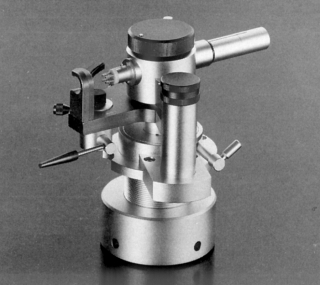
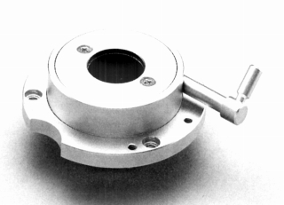
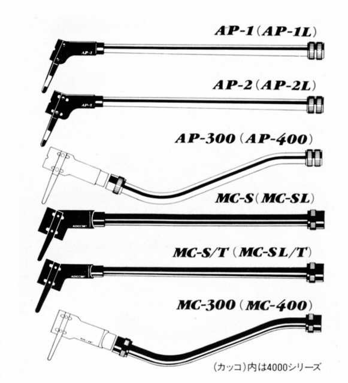
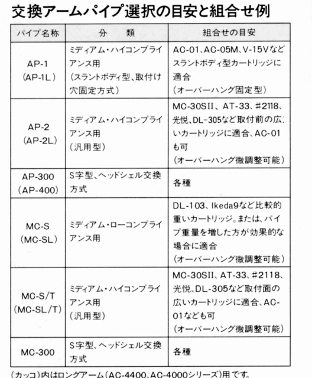
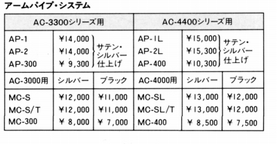
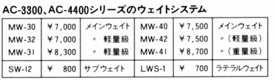
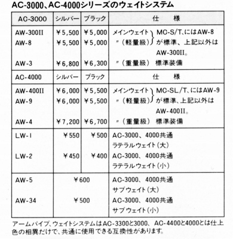
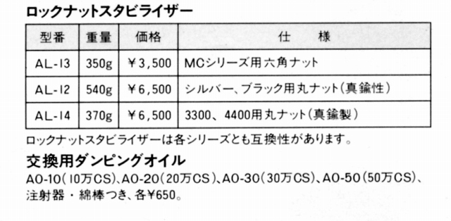

AC-3300/4400シリーズオプション（1990年頃のもの）
CB-3040

■価格 88,000円
■備考 センタ-ブロックユニット
AC-3000/4000MC、SilverとAC-3300/4400の機械的な差は、
センターブロックにある。他のパーツの互換性は確保されて
いるのでセンターブロックの交換でグレードアップできる。
CB-3040LB

■価格 78,000円
■備考 軽量アームベースユニット。
AC-3300/4400シリーズをトーレンスやリンなどの軽量
フローティング・プレーヤーで使用する為の自重250gの
軽量アームベースユニット。
組み込んでアームシステムとしたのがAC-3300/4400LBだが、
センターブロック単体での販売もあった。
アームパイプシステム



なお、AC-300/400MK�U用や初期のAC-3000/4000MC用も原則的に使用可能なはずだ。
ウェイトシステム


その他

オーディオクラフトのインデックスへ